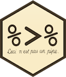

mean(gapminder$gdpPercap[gapminder$continent == "Africa"])[1] 2193.755mean(gapminder$gdpPercap[gapminder$continent == "Americas"])[1] 7136.11mean(gapminder$gdpPercap[gapminder$continent == "Asia"])[1] 7902.15tidyverseIt is often said that 80% of data analysis is spent on the process of cleaning and preparing the data (Dasu and Johnson, 2003).
Thus before you can even get to doing any sort of sophisticated analysis or plotting, you’ll generally first need to:
The tidyverse is a suite of packages designed specifically to help with both these steps; some of which we will be introducing in this module. These are by no means the only packages out there for data wrangling but they are increasingly popular for their readable, straightforward syntax and sensible default behaviors.
So far, you’ve seen the basics of manipulating data frames, e.g. subsetting, merging, and basic calculations. For instance, we can use base R functions to calculate summary statistics across groups of observations, e.g., the mean GDP per capita within each region:
mean(gapminder$gdpPercap[gapminder$continent == "Africa"])[1] 2193.755mean(gapminder$gdpPercap[gapminder$continent == "Americas"])[1] 7136.11mean(gapminder$gdpPercap[gapminder$continent == "Asia"])[1] 7902.15But this isn’t ideal because it involves a fair bit of repetition. Repeating yourself will cost you time, both now and later, and potentially introduce hard-to-find bugs.
dplyrLuckily, the dplyr package provides a number of very useful functions for manipulating data frames. These functions will save you time and hassle by reducing repetition, and will help to make your code more human-readable (trust me: your future self and others might thank you!)
Here we’re going to cover 6 of the most commonly used functions as well as using pipes (%>%) to combine them.
select()filter()group_by()summarize()mutate()arrange()Let’s load the package:
library(dplyr)dplyr::selectImagine that we just received the gapminder dataset, but are only interested in a few variables in it. The select() function can help us to keep only the columns corresponding to variables we select.
year_country_gdp_dplyr <- select(gapminder, year, country, gdpPercap)
head(year_country_gdp_dplyr)# A tibble: 6 × 3
year country gdpPercap
<int> <fct> <dbl>
1 1952 Afghanistan 779.
2 1957 Afghanistan 821.
3 1962 Afghanistan 853.
4 1967 Afghanistan 836.
5 1972 Afghanistan 740.
6 1977 Afghanistan 786.
We see the new dataframe only contains the year, country and gdpPercap. This is equivalent to the base R subsetting function:
year_country_gdp_base <- gapminder[,c("year", "country", "gdpPercap")]
head(year_country_gdp_base)# A tibble: 6 × 3
year country gdpPercap
<int> <fct> <dbl>
1 1952 Afghanistan 779.
2 1957 Afghanistan 821.
3 1962 Afghanistan 853.
4 1967 Afghanistan 836.
5 1972 Afghanistan 740.
6 1977 Afghanistan 786.We can even check that these two data frames are the same:
identical(year_country_gdp_dplyr, year_country_gdp_base)[1] TRUEBut, as we will see, dplyr makes for much more readable, efficient code because of its pipe operator.
dplyr
Above, we used what’s called “normal” grammar, but the strengths of dplyr lie in combining several functions using pipes.
In typical base R code, a simple operation might be written like:
# NOT run
cupcakes <- bake(pour(mix(ingredients)))A computer has no trouble understanding this and your cupcakes will be made just fine but a person has to read right to left to understand the order of operations - the opposite of how most western languages are read - making it harder to understand what is being done!
To be more readable without pipes, we might break up this code into intermediate objects…
# NOT run
batter <- mix(ingredients)
muffin_tin <- pour(batter)
cupcakes <- bake(muffin_tin)but this can clutter our environment with a lot of variables that aren’t very useful to us, and often are named very similar things (e.g. step, step1, step2…) which can lead to confusion and those hard-to-track-down bugs.
The pipe makes it easier to read code because it lays out the operations left to right so each line can be read like a line of a recipe for the perfect data frame!
Pipes take the input on the left side of the %>% symbol and pass it in as the first argument to the function on the right side.
With pipes, our cupcake example might be written like:
## NOT run
cupcakes <- ingredients %>%
mix() %>%
pour() %>%
bake()Tip: As of R 4.1.0, you can use |> from base R without needing to load dplyr.
Pro Tip: In RStudio the hotkey for the pipe is Ctrl + Shift + M.
select & Pipe (%>%)Since the pipe grammar is unlike anything we’ve seen in R before, let’s repeat what we did above with the gapminder dataset using pipes:
year_country_gdp <- gapminder %>% select(year, country, gdpPercap)First, we summon the gapminder data frame and pass it on to the next step using the pipe symbol %>%. The second step is the select() function. In this case we don’t specify which data object we use in the call to select() since we’ve piped it in.
Fun Fact: There is a good chance you have encountered pipes before in the shell. In R, a pipe symbol is %>% while in the shell it is |. But the concept is the same!
POLL 6A: Which of these will produce an error? (Assume ‘continent’ is a column in the data frame but not a stand-alone variable.)
(respond at https://pollev.com/chrispaciorek428)
We’ll talk more about when you need quotes and when not a bit later.
dplyr::filterNow let’s say we’re only interested in African countries. We can combine select and filter to select only the observations where continent is Africa.
year_country_gdp_africa <- gapminder %>%
filter(continent == "Africa") %>%
select(year,country,gdpPercap)As with last time, first we pass the gapminder data frame to the filter() function, then we pass the filtered version of the gapminder data frame to the select() function.
To clarify, both the select and filter functions subsets the data frame. The difference is that select extracts certain columns, while filter extracts certain rows.
Note: The order of operations is very important in this case. If we used ‘select’ first, filter would not be able to find the variable continent since we would have removed it in the previous step.
dplyr calculations across groupsA common task you’ll encounter when working with data is running calculations on different groups within the data. For instance, what if we wanted to calculate the mean GDP per capita for each continent?
In base R, you would have to run the mean() function for each subset of data:
mean(gapminder$gdpPercap[gapminder$continent == "Africa"])[1] 2193.755mean(gapminder$gdpPercap[gapminder$continent == "Americas"])[1] 7136.11mean(gapminder$gdpPercap[gapminder$continent == "Asia"])[1] 7902.15mean(gapminder$gdpPercap[gapminder$continent == "Europe"])[1] 14469.48mean(gapminder$gdpPercap[gapminder$continent == "Oceania"])[1] 18621.61That’s a lot of repetition! To make matters worse, what if we wanted to add these values to our original data frame as a new column? We would have to write something like this:
gapminder$mean_continent_gdp <- NA
gapminder$mean_continent_gdp[gapminder$continent == "Africa"] <- mean(gapminder$gdpPercap[gapminder$continent == "Africa"])
gapminder$mean_continent_gdp[gapminder$continent == "Americas"] <- mean(gapminder$gdpPercap[gapminder$continent == "Americas"])
gapminder$mean_continent_gdp[gapminder$continent == "Asia"] <- mean(gapminder$gdpPercap[gapminder$continent == "Asia"])
gapminder$mean_continent_gdp[gapminder$continent == "Europe"] <- mean(gapminder$gdpPercap[gapminder$continent == "Europe"])
gapminder$mean_continent_gdp[gapminder$continent == "Oceania"] <- mean(gapminder$gdpPercap[gapminder$continent == "Oceania"])You can see how this can get pretty tedious, especially if we want to calculate more complicated or refined statistics. We could use loops or apply functions, but these can be difficult, slow, or error-prone.
# Want to remove the column we just made? -- there are two easy ways!
gapminder <- gapminder %>% select(-mean_continent_gdp) # drop a column with -
# OR
gapminder$mean_continent_gdp <- NULLdplyr split-apply-combineThe abstract problem we’re encountering here is know as “split-apply-combine”:

We want to split our data into groups (in this case continents), apply some calculations on each group, then combine the results together afterwards.
Module 4 gave some ways to do split-apply-combine type operations using the lapply family of functions, but dplyr offers a cleaner, more straight-forward solution to this problem specifically for data frames.
dplyr::group_byWe’ve already seen how filter() can help us select observations that meet certain criteria (in the above: continent == "Europe"). More helpful, however, is the group_by() function, which will essentially use every unique criteria that we could have used in filter().
A grouped_df can be thought of as a list where each item in the list is a data.frame which contains only the rows that correspond to a particular value of one or more grouping variables (continent in our example).

dplyr::summarizegroup_by() on its own is not particularly interesting. It’s much more exciting used in conjunction with the summarize() function. This will allow use to create new variable(s) by applying transformations to variables in each of the continent-specific data frames.
In other words, using the group_by() function, we split our original data frame into multiple pieces, which we then apply summary functions to (e.g., mean() or sd()) within summarize(). The output is a new data frame reduced in size, with one row per group.
gdp_bycontinents <- gapminder %>%
group_by(continent) %>%
summarize(mean_gdpPercap = mean(gdpPercap))
head(gdp_bycontinents)# A tibble: 5 × 2
continent mean_gdpPercap
<fct> <dbl>
1 Africa 2194.
2 Americas 7136.
3 Asia 7902.
4 Europe 14469.
5 Oceania 18622.
That allowed us to calculate the mean gdpPercap for each continent. But it gets even better – the function group_by() allows us to group by multiple variables. Let’s group by year and continent.
gdp_bycontinents_byyear <- gapminder %>%
group_by(continent, year) %>%
summarize(mean_gdpPercap = mean(gdpPercap))`summarise()` has grouped output by 'continent'. You can override using the
`.groups` argument.head(gdp_bycontinents_byyear)# A tibble: 6 × 3
# Groups: continent [1]
continent year mean_gdpPercap
<fct> <int> <dbl>
1 Africa 1952 1253.
2 Africa 1957 1385.
3 Africa 1962 1598.
4 Africa 1967 2050.
5 Africa 1972 2340.
6 Africa 1977 2586.That is already quite powerful, but it gets even better! You’re not limited to defining one new variable in summarize().
gdp_pop_bycontinents_byyear <- gapminder %>%
group_by(continent, year) %>%
summarize(mean_gdpPercap = mean(gdpPercap),
sd_gdpPercap = sd(gdpPercap),
mean_pop = mean(pop),
sd_pop = sd(pop))`summarise()` has grouped output by 'continent'. You can override using the
`.groups` argument.head(gdp_pop_bycontinents_byyear)# A tibble: 6 × 6
# Groups: continent [1]
continent year mean_gdpPercap sd_gdpPercap mean_pop sd_pop
<fct> <int> <dbl> <dbl> <dbl> <dbl>
1 Africa 1952 1253. 983. 4570010. 6317450.
2 Africa 1957 1385. 1135. 5093033. 7076042.
3 Africa 1962 1598. 1462. 5702247. 7957545.
4 Africa 1967 2050. 2848. 6447875. 8985505.
5 Africa 1972 2340. 3287. 7305376. 10130833.
6 Africa 1977 2586. 4142. 8328097. 11585184.dplyr::mutateWhat if we wanted to add these values to our original data frame instead of creating a new object? For this, we can use the mutate() function, which is similar to summarize() except it creates new variables in the same data frame that you pass into it.
gap_with_extra_vars <- gapminder %>%
group_by(continent, year) %>%
mutate(mean_gdpPercap = mean(gdpPercap),
sd_gdpPercap = sd(gdpPercap),
mean_pop = mean(pop),
sd_pop = sd(pop))
head(gap_with_extra_vars)# A tibble: 6 × 10
# Groups: continent, year [6]
country continent year lifeExp pop gdpPercap mean_gdpPercap sd_gdpPercap
<fct> <fct> <int> <dbl> <int> <dbl> <dbl> <dbl>
1 Afghanis… Asia 1952 28.8 8.43e6 779. 5195. 18635.
2 Afghanis… Asia 1957 30.3 9.24e6 821. 5788. 19507.
3 Afghanis… Asia 1962 32.0 1.03e7 853. 5729. 16416.
4 Afghanis… Asia 1967 34.0 1.15e7 836. 5971. 14063.
5 Afghanis… Asia 1972 36.1 1.31e7 740. 8187. 19088.
6 Afghanis… Asia 1977 38.4 1.49e7 786. 7791. 11816.
# ℹ 2 more variables: mean_pop <dbl>, sd_pop <dbl>We can use also use mutate() to create new variables prior to (or even after) summarizing information. Note that mutate() does not need to operate on grouped data and it can do element-wise transformations.
gdp_pop_bycontinents_byyear <- gapminder %>%
mutate(gdp_billion = gdpPercap*pop/10^9) %>%
group_by(continent, year) %>%
summarize(mean_gdpPercap = mean(gdpPercap),
sd_gdpPercap = sd(gdpPercap),
mean_pop = mean(pop),
sd_pop = sd(pop),
mean_gdp_billion = mean(gdp_billion),
sd_gdp_billion = sd(gdp_billion))`summarise()` has grouped output by 'continent'. You can override using the
`.groups` argument.head(gdp_pop_bycontinents_byyear)# A tibble: 6 × 8
# Groups: continent [1]
continent year mean_gdpPercap sd_gdpPercap mean_pop sd_pop mean_gdp_billion
<fct> <int> <dbl> <dbl> <dbl> <dbl> <dbl>
1 Africa 1952 1253. 983. 4570010. 6.32e6 5.99
2 Africa 1957 1385. 1135. 5093033. 7.08e6 7.36
3 Africa 1962 1598. 1462. 5702247. 7.96e6 8.78
4 Africa 1967 2050. 2848. 6447875. 8.99e6 11.4
5 Africa 1972 2340. 3287. 7305376. 1.01e7 15.1
6 Africa 1977 2586. 4142. 8328097. 1.16e7 18.7
# ℹ 1 more variable: sd_gdp_billion <dbl>mutate vs. summarizeIt can be confusing to decide whether to use mutate or summarize. The key distinction is whether you want the output to have one row for each group or one row for each row in the original data frame:
mutate: creates new columns with as many rows as the original data framesummarize: creates a data frame with as many rows as groupsNote that if you use an aggregation function such as mean() within mutate() without using groupby(), you’ll simply do the summary over all the rows of the input data frame.
And if you use an aggregation function such as mean() within summarize() without using groupby(), you’ll simply create an output data frame with one row (i.e., the whole input data frame is a single group).
mutate vs. summarize: quick quizPOLL 6B: Which of these has the same number of rows as the original gapminder dataframe?
(respond at https://pollev.com/chrispaciorek428)
dplyr::arrangeAs a last step, let’s say we want to sort the rows in our data frame according to values in a certain column. We can use the arrange() function to do this. For instance, let’s organize our rows by year (recent first), and then by continent.
gap_with_extra_vars <- gapminder %>%
group_by(continent, year) %>%
mutate(mean_gdpPercap = mean(gdpPercap),
sd_gdpPercap = sd(gdpPercap),
mean_pop = mean(pop),
sd_pop = sd(pop)) %>%
arrange(desc(year), continent) # `desc()` = descending order
head(gap_with_extra_vars)# A tibble: 6 × 10
# Groups: continent, year [1]
country continent year lifeExp pop gdpPercap mean_gdpPercap sd_gdpPercap
<fct> <fct> <int> <dbl> <int> <dbl> <dbl> <dbl>
1 Algeria Africa 2007 72.3 3.33e7 6223. 3089. 3618.
2 Angola Africa 2007 42.7 1.24e7 4797. 3089. 3618.
3 Benin Africa 2007 56.7 8.08e6 1441. 3089. 3618.
4 Botswana Africa 2007 50.7 1.64e6 12570. 3089. 3618.
5 Burkina … Africa 2007 52.3 1.43e7 1217. 3089. 3618.
6 Burundi Africa 2007 49.6 8.39e6 430. 3089. 3618.
# ℹ 2 more variables: mean_pop <dbl>, sd_pop <dbl>dplyr take-aways# without pipes:
gap_with_extra_vars <- arrange(
mutate(
group_by(gapminder, continent, year),
mean_gdpPercap = mean(gdpPercap)
),
desc(year), continent)You may run across the term “non-standard evaluation”. The use of data frame variables without quotes around them is an example of this.
Why is this strange?
gapminder %>% select(continent, year) %>% tail()Compare it to:
gapminder[ , c('continent', 'year')]
gapminder[ , 'continent']Because continent and year are not variables our current environment! dplyr does some fancy stuff behind the scenes to save us from typing the quotes.
This is fine if you have a data analysis workflow but if you want to write a function that, for example, selects an arbitrary set of columns, you’ll run into trouble.
## here's a helper function that computes the mean of a variable, stratifying by a grouping variable
grouped_mean <- function(data, group_var, summary_var) {
data %>%
group_by(group_var) %>%
summarise(mean = mean(summary_var))
}
gapminder %>% grouped_mean(continent, lifeExp)
gapminder %>% grouped_mean('continent', 'lifeExp')See the rlang, tidyeval and wrapr packages for how one can deal with this problem in this context of using functions.
Even before we conduct analysis or calculations, we need to put our data into the correct format. The goal here is to rearrange a messy dataset into one that is tidy.
The two most important properties of tidy data are:
Tidy data is easier to work with, because you have a consistent way of referring to variables (as column names) and observations (as row indices). It then becomes easy to manipulate, visualize, and model.
For more on the concept of tidy data, you can read Hadley Wickham’s paper.
“Tidy datasets are all alike but every messy dataset is messy in its own way.” – Hadley Wickham
Tabular datasets can be arranged in many ways. For instance, consider the data below. Each data set displays information on heart rate observed in individuals across 3 different time periods. But the data are organized differently in each table.
wide <- data.frame(
name = c("Wilbur", "Petunia", "Gregory"),
time1 = c(67, 80, 64),
time2 = c(56, 90, 50),
time3 = c(70, 67, 101)
)
wide name time1 time2 time3
1 Wilbur 67 56 70
2 Petunia 80 90 67
3 Gregory 64 50 101long <- data.frame(
name = c("Wilbur", "Petunia", "Gregory", "Wilbur", "Petunia", "Gregory", "Wilbur", "Petunia", "Gregory"),
time = c(1, 1, 1, 2, 2, 2, 3, 3, 3),
heartrate = c(67, 80, 64, 56, 90, 50, 70, 67, 10)
)
long name time heartrate
1 Wilbur 1 67
2 Petunia 1 80
3 Gregory 1 64
4 Wilbur 2 56
5 Petunia 2 90
6 Gregory 2 50
7 Wilbur 3 70
8 Petunia 3 67
9 Gregory 3 10POLL 6C: Which of the ‘wide’ and ‘long’ objects do you prefer in terms of how the heartrate ‘data’ are formatted?
(respond at https://pollev.com/chrispaciorek428)
Question: Which one of these do you think is the tidy format?
Answer: The first data frame (the “wide” one) would not be considered tidy because values (i.e., heartrate) are spread across multiple columns.
We often refer to these different structures as “long” vs. “wide” formats. In the “long” format, you usually have 1 column for the observed variable and the other columns are ID variables.
For the “wide” format each row is often a site/subject/patient and you have multiple observation variables containing the same type of data. These can be either repeated observations over time, or observation of multiple variables (or a mix of both). In the above case, we had the same kind of data (heart rate) entered across 3 different columns, corresponding to three different time periods.

You may find data input may be simpler and some programs/functions may prefer the “wide” format. However, many of R’s functions have been designed assuming you have “long” format data.
Lets look at the structure of our original gapminder data frame:
head(gapminder)# A tibble: 6 × 6
country continent year lifeExp pop gdpPercap
<fct> <fct> <int> <dbl> <int> <dbl>
1 Afghanistan Asia 1952 28.8 8425333 779.
2 Afghanistan Asia 1957 30.3 9240934 821.
3 Afghanistan Asia 1962 32.0 10267083 853.
4 Afghanistan Asia 1967 34.0 11537966 836.
5 Afghanistan Asia 1972 36.1 13079460 740.
6 Afghanistan Asia 1977 38.4 14880372 786.Question: Is this data frame wide or long?
Answer: This data frame is somewhere in between the purely ‘long’ and ‘wide’ formats. We have 3 “ID variables” (continent, country, year) and 3 “Observation variables” (pop, lifeExp, gdpPercap).
Despite not having ALL observations in 1 column, this intermediate format makes sense given that all 3 observation variables have different units. As we have seen, many of the functions in R are often vector based, and you usually do not want to do mathematical operations on values with different units.
On the other hand, there are some instances in which a purely long or wide format is ideal (e.g. plotting). Likewise, sometimes you’ll get data on your desk that is poorly organized, and you’ll need to reshape it.
tidyrThankfully, the tidyr package will help you efficiently transform your data regardless of original format.
# Install the "tidyr" package (only necessary one time)
# install.packages("tidyr") # Not Run
# Load the "tidyr" package (necessary every new R session)
library(tidyr)tidyr::pivot_longerUntil now, we’ve been using the nicely formatted original gapminder data set. This data set is not quite wide and not quite long – it’s something in the middle, but “real” data (i.e., our own research data) will never be so well organized. Here let’s start with the wide format version of the gapminder data set.
gap_wide <- read.csv("../data/gapminder_wide.csv")
head(gap_wide) continent country gdpPercap_1952 gdpPercap_1957 gdpPercap_1962
1 Africa Algeria 2449.0082 3013.9760 2550.8169
2 Africa Angola 3520.6103 3827.9405 4269.2767
3 Africa Benin 1062.7522 959.6011 949.4991
4 Africa Botswana 851.2411 918.2325 983.6540
5 Africa Burkina Faso 543.2552 617.1835 722.5120
6 Africa Burundi 339.2965 379.5646 355.2032
gdpPercap_1967 gdpPercap_1972 gdpPercap_1977 gdpPercap_1982 gdpPercap_1987
1 3246.9918 4182.6638 4910.4168 5745.1602 5681.3585
2 5522.7764 5473.2880 3008.6474 2756.9537 2430.2083
3 1035.8314 1085.7969 1029.1613 1277.8976 1225.8560
4 1214.7093 2263.6111 3214.8578 4551.1421 6205.8839
5 794.8266 854.7360 743.3870 807.1986 912.0631
6 412.9775 464.0995 556.1033 559.6032 621.8188
gdpPercap_1992 gdpPercap_1997 gdpPercap_2002 gdpPercap_2007 lifeExp_1952
1 5023.2166 4797.2951 5288.0404 6223.3675 43.077
2 2627.8457 2277.1409 2773.2873 4797.2313 30.015
3 1191.2077 1232.9753 1372.8779 1441.2849 38.223
4 7954.1116 8647.1423 11003.6051 12569.8518 47.622
5 931.7528 946.2950 1037.6452 1217.0330 31.975
6 631.6999 463.1151 446.4035 430.0707 39.031
lifeExp_1957 lifeExp_1962 lifeExp_1967 lifeExp_1972 lifeExp_1977 lifeExp_1982
1 45.685 48.303 51.407 54.518 58.014 61.368
2 31.999 34.000 35.985 37.928 39.483 39.942
3 40.358 42.618 44.885 47.014 49.190 50.904
4 49.618 51.520 53.298 56.024 59.319 61.484
5 34.906 37.814 40.697 43.591 46.137 48.122
6 40.533 42.045 43.548 44.057 45.910 47.471
lifeExp_1987 lifeExp_1992 lifeExp_1997 lifeExp_2002 lifeExp_2007 pop_1952
1 65.799 67.744 69.152 70.994 72.301 9279525
2 39.906 40.647 40.963 41.003 42.731 4232095
3 52.337 53.919 54.777 54.406 56.728 1738315
4 63.622 62.745 52.556 46.634 50.728 442308
5 49.557 50.260 50.324 50.650 52.295 4469979
6 48.211 44.736 45.326 47.360 49.580 2445618
pop_1957 pop_1962 pop_1967 pop_1972 pop_1977 pop_1982 pop_1987 pop_1992
1 10270856 11000948 12760499 14760787 17152804 20033753 23254956 26298373
2 4561361 4826015 5247469 5894858 6162675 7016384 7874230 8735988
3 1925173 2151895 2427334 2761407 3168267 3641603 4243788 4981671
4 474639 512764 553541 619351 781472 970347 1151184 1342614
5 4713416 4919632 5127935 5433886 5889574 6634596 7586551 8878303
6 2667518 2961915 3330989 3529983 3834415 4580410 5126023 5809236
pop_1997 pop_2002 pop_2007
1 29072015 31287142 33333216
2 9875024 10866106 12420476
3 6066080 7026113 8078314
4 1536536 1630347 1639131
5 10352843 12251209 14326203
6 6121610 7021078 8390505The first step towards getting our nice intermediate data format is to first convert from the wide to the long format. The function pivot_longer() will ‘gather’ the observation variables into a single variable. This is sometimes called “melting” your data, because it melts the table from wide to long. Those data will be melted into two variables: one for the variable names, and the other for the variable values.
gap_long <- gap_wide %>% pivot_longer(gdpPercap_1952:pop_2007)
head(gap_long)# A tibble: 6 × 4
continent country name value
<chr> <chr> <chr> <dbl>
1 Africa Algeria gdpPercap_1952 2449.
2 Africa Algeria gdpPercap_1957 3014.
3 Africa Algeria gdpPercap_1962 2551.
4 Africa Algeria gdpPercap_1967 3247.
5 Africa Algeria gdpPercap_1972 4183.
6 Africa Algeria gdpPercap_1977 4910.Formerly one used the function gather to do this, but many people found it not to be intuitive to use.
tidyr::selectIf there are a lot of columns or they’re named in a consistent pattern, we might not want to select them using the column numbers. It’d be easier to use some information contained in the names themselves. We can select variables using:
x:z to select all variables between x and z-y to exclude ystarts_with(x, ignore.case = TRUE): all names that starts with xends_with(x, ignore.case = TRUE): all names that ends with xcontains(x, ignore.case = TRUE): all names that contain xSee the select() function in dplyr for more options.
For instance, here we do the same gather operation with (1) the starts_with function, and (2) the - operator:
# with the starts_with() function
gap_long <- gap_wide %>%
pivot_longer(c(starts_with('pop'), starts_with('lifeExp'), starts_with('gdpPercap')))
head(gap_long)# A tibble: 6 × 4
continent country name value
<chr> <chr> <chr> <dbl>
1 Africa Algeria pop_1952 9279525
2 Africa Algeria pop_1957 10270856
3 Africa Algeria pop_1962 11000948
4 Africa Algeria pop_1967 12760499
5 Africa Algeria pop_1972 14760787
6 Africa Algeria pop_1977 17152804# with the - operator
gap_long <- gap_wide %>%
pivot_longer(c(-continent, -country))
head(gap_long)# A tibble: 6 × 4
continent country name value
<chr> <chr> <chr> <dbl>
1 Africa Algeria gdpPercap_1952 2449.
2 Africa Algeria gdpPercap_1957 3014.
3 Africa Algeria gdpPercap_1962 2551.
4 Africa Algeria gdpPercap_1967 3247.
5 Africa Algeria gdpPercap_1972 4183.
6 Africa Algeria gdpPercap_1977 4910.However you choose to do it, notice that the output collapses all of the measure variables into two columns: one containing new ID variable, the other containing the observation value for that row.
tidyr::separateYou’ll notice that in our long dataset, name actually contains 2 pieces of information, the observation type (pop, lifeExp, or gdpPercap) and the year.
We can use the separate() function to split the character strings into multiple variables:
gap_long_sep <- gap_long %>%
separate(name, into = c('obs_type','year'), sep = "_") %>%
mutate(year = as.integer(year))
head(gap_long_sep)# A tibble: 6 × 5
continent country obs_type year value
<chr> <chr> <chr> <int> <dbl>
1 Africa Algeria gdpPercap 1952 2449.
2 Africa Algeria gdpPercap 1957 3014.
3 Africa Algeria gdpPercap 1962 2551.
4 Africa Algeria gdpPercap 1967 3247.
5 Africa Algeria gdpPercap 1972 4183.
6 Africa Algeria gdpPercap 1977 4910.If you didn’t use tidyr to do this, you’d have to use the strsplit function and use multiple lines of code to replace the column in gap_long with two new columns. This solution is much cleaner.
tidyr::pivot_widerThe opposite of pivot_longer() is pivot_wider(). It spreads our observation variables back out to make a wider table. We can use this function to spread our gap_long() to the original “medium” format.
gap_medium <- gap_long_sep %>%
pivot_wider(names_from = obs_type, values_from = value)
head(gap_medium)# A tibble: 6 × 6
continent country year gdpPercap lifeExp pop
<chr> <chr> <int> <dbl> <dbl> <dbl>
1 Africa Algeria 1952 2449. 43.1 9279525
2 Africa Algeria 1957 3014. 45.7 10270856
3 Africa Algeria 1962 2551. 48.3 11000948
4 Africa Algeria 1967 3247. 51.4 12760499
5 Africa Algeria 1972 4183. 54.5 14760787
6 Africa Algeria 1977 4910. 58.0 17152804Formerly one used the function spread to do this, but many people found it not to be intuitive to use.
All we need is some quick fixes to make this dataset identical to the original gapminder dataset:
head(gapminder)# A tibble: 6 × 6
country continent year lifeExp pop gdpPercap
<fct> <fct> <int> <dbl> <int> <dbl>
1 Afghanistan Asia 1952 28.8 8425333 779.
2 Afghanistan Asia 1957 30.3 9240934 821.
3 Afghanistan Asia 1962 32.0 10267083 853.
4 Afghanistan Asia 1967 34.0 11537966 836.
5 Afghanistan Asia 1972 36.1 13079460 740.
6 Afghanistan Asia 1977 38.4 14880372 786.# rearrange columns
gap_medium <- gap_medium[,names(gapminder)]
head(gap_medium)# A tibble: 6 × 6
country continent year lifeExp pop gdpPercap
<chr> <chr> <int> <dbl> <dbl> <dbl>
1 Algeria Africa 1952 43.1 9279525 2449.
2 Algeria Africa 1957 45.7 10270856 3014.
3 Algeria Africa 1962 48.3 11000948 2551.
4 Algeria Africa 1967 51.4 12760499 3247.
5 Algeria Africa 1972 54.5 14760787 4183.
6 Algeria Africa 1977 58.0 17152804 4910.# arrange by country, continent, and year
gap_medium <- gap_medium %>%
arrange(country, continent, year)
head(gap_medium)# A tibble: 6 × 6
country continent year lifeExp pop gdpPercap
<chr> <chr> <int> <dbl> <dbl> <dbl>
1 Afghanistan Asia 1952 28.8 8425333 779.
2 Afghanistan Asia 1957 30.3 9240934 821.
3 Afghanistan Asia 1962 32.0 10267083 853.
4 Afghanistan Asia 1967 34.0 11537966 836.
5 Afghanistan Asia 1972 36.1 13079460 740.
6 Afghanistan Asia 1977 38.4 14880372 786.dplyr and tidyr have many more functions to help you wrangle and manipulate your data. See the Data Wrangling Cheat Sheet for more.
Here are some additional functions/verbs for use with dplyr:
There are some other useful packages in the tidyverse:
ggplot2 for plotting (We’ll cover this in module 7)readr and haven for reading in datapurrr for working with lists and operations similar to the lapply family introduced in Module 4.stringr, lubridate, forcats for manipulating strings, dates, and factors, respectivelyPro Tip: To install and load the core tidyverse packages (includes tidyr, dplyr, and ggplot2, among others), try:
# NOT run
install.packages("tidyverse")
library(tidyverse)dplyrUse dplyr to create a data frame containing the median lifeExp for each continent
Use dplyr to add a column to the gapminder dataset that contains the total population of the continent of each observation in a given year. For example, if the first observation is Afghanistan in 1952, the new column would contain the population of Asia in 1952.
Use dplyr to add a column called gdpPercap_diff that contains the difference between the observation’s gdpPercap and the mean gdpPercap of the continent in that year. Arrange the data frame by the column you just created, in descending order (so that the relatively richest country/years are listed first)
tidyrcountry, year, and gdpPercap_diff columns. Use tidyr put it in wide format so that countries are rows and years are columns.Hint: you’ll probably see a message about a missing grouping variable. If you don’t want continent included, you can pass the output of problem 3 through ungroup() to get rid of the continent information.